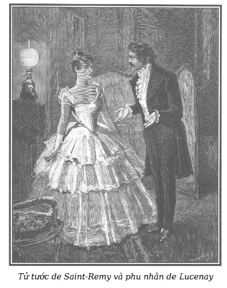

Khu nhà de Lucenay là một trong những phủ đệ vương giả bậc nhất ở vùng ngoại ô Saint-Germain, càng hùng vĩ hơn do quy mô bề thế của khoảng đất rộng: Một ngôi nhà kiểu mới dễ dàng lọt thỏm trong khung cầu thang gác của một trong những tòa ngang dãy dọc, trong khoảng đất này thừa xây dựng được cả một khu phố…
Vào lúc chín giờ tối cùng ngày hôm ấy, hai cánh cổng đồ sộ của phủ đệ mở rộng cho một cỗ xe song mã lộng lẫy tiến vào, quay một vòng tuyệt khéo trên sân rộng bao la để rồi dừng bánh trước một thềm rộng bát ngát liền với tiền sảnh đầu tiên.
Hai con tuấn mã còn đương giậm vó cồm cộp thì có người hầu cận to như hộ pháp mở cánh cửa xe có gia huy, để một chàng trai nhanh nhẹn bước ra, nhanh chóng vượt qua sáu bậc tam cấp lên thềm.
Chàng trai đó là Tử tước de Saint-Remy.
Lão chủ nợ tin vào lời bảo lãnh của phụ thân Florestan, đã đồng ý gia hạn theo yêu cầu, hắn sẽ quay lại phố Chaillot để lấy tiền lúc mười giờ cho nên anh ta do không giáp mặt nữ Công tước buổi sáng, nên tìm đến đây với ý định cảm tạ bà ta về hảo cử mới rồi, dương dương tin chắc là gặp được ngay, vào thời điểm nàng vẫn thường ưu tiên cho anh ta.
Hai người hầu buồng ở tiền sảnh vồn vã chạy ùa ra mở rộng cánh cửa lớn lắp kính khi vừa nhác trông thấy cỗ xe của Florestan. Những gia nhân khác vụt đứng dậy chào hết sức tôn trọng lúc anh ta đi qua. Tóm lại, trước một vài biểu hiện kín đáo, dễ dàng đoán biết đây là ông chủ nhí, hay đúng hơn là ông chủ thực sự của ngôi nhà.
Mỗi khi Công tước de Lucenay trở về nhà, tay chống ô, chân giậm giày guốc to quá khổ (ban ngày ông vốn không thích ngựa xe), tuy cũng vẫn những biểu luận tôn trọng y thị, nhưng người tinh ý sẽ thấy sự khác biệt rõ rệt giữa thái độ đón tiếp đức ông chồng và cách chào đón cậu tình lang.
Cánh hầu buồng trong các phòng khác cũng ân cần tíu tít như vậy khi Florestan bước vào. Lập tức đã có người dấn lên trước để thông báo với de Lucenay phu nhân.
Chưa bao giờ ông Tử tước thấy mình đắc thắng thế, hoan hỉ, tự tin và tự hào đến thế…
Qua mặt được ông bố lúc sáng, có thêm bằng chứng quyến luyến gắn bó của bà de Lucenay, vui mừng vì thoát khỏi tình thế đáng sợ một cách kỳ diệu như thế, khuôn mặt anh ta bừng bừng khí thế hân hoan, bạo dạn, càng thêm quyến rũ. Tóm lại, chưa lúc nào anh ta thấy phởn phơ như lúc này.
Anh ta có lý đấy chứ…
Chưa bao giờ mà tấm thân mảnh dẻ, uyển chuyển của anh ta lại dõng dạc đường hoàng như vậy. Đầu ngẩng cao mắt nhìn thẳng, anh ta tự hào thích thú mơn man với ý nghĩ: bà phu nhân rất quyền quý, bà chúa cái cung điện này thuộc về ta, đợi ta…
Say sưa với những ý tưởng hợm hĩnh kỳ cục như vậy, Florestan đi qua ba, bốn phòng khách, tiến đến gian buồng nhỏ, nữ Công tước thường vẫn chờ ở đấy. Tự ngắm thêm một lần nữa trong gương, Tử tước hài lòng với mình. Người hầu buồng mở rộng hai cánh cửa phòng khách và báo trình:
– Thưa, có ngài Tử tước de Saint-Remy!
Nỗi ngạc nhiên, lòng phẫn nộ của nữ Công tước lúc đó thật khó tả. Bà ta tin rằng Bá tước đã không giấu giếm với con trai việc bà ta đã nghe hết mọi chuyện.
Chúng tôi đã từng kể: Biết Florestan quá bỉ ổi, mối tình của bà ta đột ngột chấm dứt và thay vào đó là một mối khinh thị băng giá.
Chúng tôi cũng đã từng giới thiệu: Tuy nhẹ dạ, tuy lầm lẫn trong tình yêu nhưng phu nhân de Lucenay vẫn giữ nguyên vẹn, thuần khiết những ý niệm về cương trực, về danh dự, về sự trung thực, hào hùng, nghĩa hiệp của giới kỵ sĩ, những điểm ấy vẫn mãnh liệt, vẫn bức xúc. Trong khuyết điểm của bà ta vẫn có chất ưu. Trong các thói xấu vẫn có cái hạnh, phóng túng trong tình ái như một gã đàn ông nhưng còn hơn các bậc mày râu mà nâng tình ái lên cao xa hơn với lòng tận tâm, với nết cao thượng, với tính dũng cảm và đặc biệt là sự kinh tởm đối với mọi điều đê tiện thấp hèn.
Tối hôm ấy, phải tiếp xúc với giới thượng lưu nên tuy không đeo kim cương, ngọc quý, de Lucenay phu nhân đã ăn mặc lộng lẫy theo sở thích trang nhã như thường lệ. Bộ trang phục đỏ tươi rực rỡ chưng diện đàng hoàng, đường bệ theo cung cách mệnh phụ, sắc đẹp của bà ta lồng lộng, thân hình như tiên nữ trong mây càng làm nổi bật thần thái đài các ít ai có được trên đời. Cái vẻ đẹp ấy, nếu cần, bà ta còn biết đẩy nó lên làm choáng ngợp mọi người.
Vốn đã biết tính cách kiêu kỳ và quyết đoán của nữ Công tước, ta hãy hình dung nét mặt, cái nhìn của bà ta khi ông Tử tước bước tới, bảnh bao tươi cười và tự tin tình tứ:
– Clotilde thân yêu của anh, em tốt quá chừng, thật tốt quá chừng tốt…
Tử tước không nói tiếp được.
Nữ Công tước ngồi nguyên không động đậy, nhưng cử chỉ, khóe mắt bà ta lộ vẻ khinh bỉ vừa lặng lẽ vừa nặng nề, khiến Florestan phải ngừng lời.
Anh ta không nói thêm được tiếng nào, cũng không dấn thêm được một bước, chưa bao giờ phu nhân đối xử như thế với anh ta. Không thể nào tin được đó vẫn là người phụ nữ trước đối với anh ta lúc nào cũng dịu dàng, âu yếm và chiều chuộng phục tùng. Bởi không gì yếu ớt bẽn lẽn hơn là người đàn bà, dù bản tính vốn quyết đoán, trước người mà họ yêu và đã chế ngự được họ.
Phút sửng sốt qua đi, Florestan cảm thấy xấu hổ vì đã quá yếu đuối, và tính táo tợn quen thuộc trỗi dậy. Tiến một bước về phía phu nhân để nắm lấy tay bà, anh ta lấy giọng hết sức ngọt ngào, mơn trớn:
– Trời đất ơi, Clotilde! Thế này là thế nào? Anh chưa thấy bao giờ em đẹp như hôm nay, vậy mà…
– Ái chà, thế này thì trâng tráo thật! – Nữ Công tước nói to và lùi về phía sau, vẻ kiêu kỳ và kinh tởm rõ rệt đến mức Florestan lại lần nữa sửng sốt, rụng rời. Tuy nhiên anh ta ít nhiều cũng đánh bạo mà nói:
– Clotilde, ít ra em cũng cho anh biết duyên cớ của sự thay đổi đột ngột như thế này chứ! Anh đã làm gì nên nỗi? Em muốn gì nào?

.Không trả lời, de Lucenay phu nhân nhìn anh ta như người ta vẫn nói, từ chân lên đầu, lăng nhục hết cách, khiến Florestan tím mặt giận dữ nói to:
– Thưa bà, tôi vốn biết bà có thói quen hay trở mặt như bàn tay. Bà muốn cắt đứt phải không?
Nữ Công tước phá lên cười cay độc:
– Tự phụ buồn cười chưa kìa! Nên biết là khi một tên hầu buồng ăn trộm của tôi, tôi không cắt đứt với nó mà tống cổ nó đi.
– Này, bà…
Nữ Công tước ngạo mạn, xẵng giọng:
– Thôi đi! Tôi ghê tởm cái mặt anh. Anh muốn gì ở đây nữa? Chưa nhận được hay sao?
– Đúng như vậy ư? Tôi đã đoán đúng mà. Số tiền hai mươi lăm nghìn franc ấy?
– Đã rút được cái chứng từ giả mạo cuối cùng của anh về rồi chứ? Thanh danh dòng họ của anh thế là đã thoát khỏi bêu riếu. Thế là được rồi. Thôi, anh đi đi!
– Ái chà, bà tưởng…
– Tôi cũng tiếc món tiền ấy lắm đấy, nó có thể đem mà cứu giúp được biết bao người lương thiện. Tuy nhiên cũng phải nghĩ đến sự ô nhục của thân phụ anh, và nỗi nhục nhã của tôi nữa.
– Vậy là, Clotilde, bà biết hết rồi sao? Chao ôi, bà thấy không, bây giờ tôi chỉ còn còn cách chết đi thôi! – Florestan gào lên, thống thiết và tuyệt vọng.
Một tràng cười xấc xược của nữ Công tước tiếp theo ngay lời than vãn bi thảm ấy. Hết cơn cười sặc sụa, bà ta nói:
– Lạy Chúa, chưa bao giờ tôi dám tin rằng sự bỉ ổi lại có thể nực cười đến vậy!
– Thưa bà… – Florestan giận đến nhăn nhúm mặt mày.
Bỗng hai cánh cửa lớn mở rộng, có tiếng thông báo:
– Ngài Công tước de Montbrison.
Dù giỏi tự chủ đi nữa, Florestan cũng khó kìm được nỗi tức tối sôi sục mà một người sành sỏi hơn chàng Công tước trẻ tuổi này nhất thiết sẽ nhận ra.
Chàng de Montbrison chỉ mới suýt soát mười tám tuổi.
Ta cứ hình dung một khuôn mặt con gái tươi tắn, tóc hoe vàng, da trắng hồng, môi đỏ tươi, cằm nhẵn lớt phớt râu tơ, thêm vào đó là đôi mắt nâu mở to, bẽn lẽn chỉ cần có dịp để ánh lên lanh lợi, một thân hình mảnh mai như nữ Công tước. Thế là ta có được ý niệm về chàng tiểu Công tước ấy, vị tiểu thần lý tưởng mà lúc nào các nữ Bá tước và tùy nữ cũng cứ muốn chụp cho họ một cái mũ trùm phụ nữ, khi nhận ra cái cổ trắng như ngà kia.
Chàng Tử tước, hoặc vì kém cỏi hoặc vì lì lợm vẫn lần khân ở đấy.
– Conrad ơi, cậu đáng mến quá! Chiều nay cậu đã nghĩ đến chị. – Nữ Công tước đưa tay ra cho chàng Công tước, giọng cực kỳ âu yếm.
Chàng trai này sắp sửa nắm lấy tay bà chị họ, nhưng bà ta lại nâng cao bàn tay lên, vui vẻ:
– Hãy hôn bàn tay chị đi, cậu! Tay cậu đang đi găng kia mà.
– Chị tha lỗi. – Chàng trai lúng búng và hôn nhẹ lên bàn tay trần xinh xắn.
– Cậu Conrad, tối nay cậu định làm gì? – Phu nhân hỏi, tỏ ra không hề mảy may chú ý đến Florestan.
– Em không làm gì hết, chị ạ! Ở nhà chị về, em sẽ đến câu lạc bộ.
– Không đâu! Cậu sẽ đi với vợ chồng chị đến thăm phu nhân de Senneval. Hôm nay là ngày họ tiếp khách, phu nhân đã nhiều lần nhờ chị giới thiệu với cậu.
– Chị ạ, em rất sung sướng được tuân lệnh chị.
– Với lại, thật ra mà nói, chị không thích thấy cậu chưa gì đã nhiễm những thói quen và sở thích câu lạc bộ. Cậu đã thừa điều kiện để được người ta hoan nghênh và cầu thân trong giới thượng lưu. Cậu phải năng lui tới đó đây nhiều hơn nữa đấy nhé!
– Thưa chị, vâng ạ!
– Và với cậu thì chị cứ phải coi mình như bà quản lý mới được. Conrad thân mến, chị sắp sửa yêu sách nhiều lắm đấy! Cậu đã trưởng thành, đúng thế, nhưng chị đoán chắc là cậu vẫn phải được giám trợ và cậu phải tự quyết định để cho chị đỡ đầu.
– Thế thì tuyệt quá, em thật có phúc! – Cậu Công tước reo lên.
Khó mà tả nổi sự cuồng nộ ngấm ngầm của Florestan lúc đó đang đứng tựa vào lò sưởi.
Cả chàng Công tước lẫn Clotilde không ai chú ý đến anh ta. Biết tính nữ Công tước thường quyết đoán nhanh chóng, anh ta tưởng tượng rằng bà ta sẽ táo tợn và khinh thị đến mức giở trò làm đỏm trong khuôn phép với de Montbrison ngay trước mũi anh ta.
Đâu có như vậy, nữ Công tước âu yếm cậu em họ gần như mẹ với con vì bà ta đã mục kích ngày cậu chào đời. Nhưng cậu ta đẹp trai thế kia, lại tỏ ra quá hạnh phúc trước sự tiếp đón duyên dáng của bà chị họ! Cho nên lòng ghen tuông hay đúng hơn là lòng tự ái của Florestan càng bốc mạnh. Tâm trí càng bị giày vò vì đố kỵ với Conrad đã giàu, lại đẹp, rực rỡ nhập vào cuộc sống đầy lễ hội, vui thú say sưa, nơi anh ta vừa bị tống cổ ra, đã phá sản, ô nhục lại còn bị khinh rẻ, mất hết thanh danh.
De Saint-Remy vốn gan dạ, có suy tính như thiên hạ vẫn nói, khiến người ta dám lao vào trận quyết đấu vì giận dữ hoặc bởi hợm hĩnh, kiêu căng nhưng hèn hạ và tha hóa, anh ta không đủ dũng khí để chiến thắng những thiên hướng xấu hay chí ít ra cũng không có đủ nghị lực để thoát khỏi ô nhục bằng cách tự kết liễu đời mình.
Nóng mặt vì bị nữ Công tước khinh bỉ trắng trợn, tưởng là chàng Công tước trẻ sẽ thay thế mình, de Saint-Remy quyết tâm xấc xược ăn thua với nữ Công tước và nếu cần, gây sự cả với Conrad.
Nữ Công tước thì bực mình vì sự táo tợn của Florestan, không thèm nhìn đến anh ta, còn chàng de Montbrison thì trong khi vồn vã ân cần với bà chị họ, quên khuấy phép lịch sự, cũng chẳng chào hỏi gì chàng Tử tước, mặc dù họ quen biết nhau từ lâu.
Tử tước tiến lại gần Conrad lúc này đang quay lưng lại, khẽ đụng vào cánh tay chàng, xẵng giọng châm biếm:
– Chào ngài, vạn lần xin thứ lỗi vì cho đến giờ vẫn chưa kịp thấy ngài.
Chàng de Montbrison cảm thấy mình quả là bất lịch sự, quay ngoắt người lại, xởi lởi:
– Thưa ngài, tôi rất lấy làm thẹn, thật thế. Nhưng tôi dám mong rằng bà chị tôi, người làm tôi sơ ý, sẽ vui lòng, vì thế xin ngài thông cảm, tha lỗi cho…
Không thể nhịn được nữa trước sự trâng tráo của Florestan khi anh ta vẫn cứ cố tình lần khân ở lì tại nhà mình và lại còn thách thức, bà Công tước bảo với Conrad:
– Cậu Conrad, hay thật! Không xin lỗi gì cả! Không bõ!
De Montbrison tưởng rằng bà chị họ trách đùa mình đã quá câu nệ hình thức, vui vẻ nói với Tử tước đang giận đến tái mặt:
– Tôi không năn nỉ nữa đâu, thưa ngài, vì bà chị họ của tôi không cho. Ngài thấy đấy, việc giám hộ của chị tôi đã bắt đầu…
– Và việc giám hộ sẽ không ngừng ở chỗ ấy, thưa ngài thân mến, ngài hãy tin chắc như vậy. Cho nên, trong khi dự đoán (bà Công tước sẽ vội vã thực hiện, tất nhiên thôi, không nghi ngờ gì nữa), tôi nảy ra một ý nghĩ đề nghị với ngài một điều.
– Đề nghị với tôi ư, thưa ngài? – Conrad bắt đầu khó chịu vì giọng nói cay độc của Florestan.
– Với ngài đấy ạ! Vài ngày nữa tôi sẽ đi Gerolstein để nhận chức ở tòa đại diện, nơi tôi được cử làm tùy viên. Tôi muốn nhượng lại cơ ngơi của mình với tất cả các tiện nghi cùng với chuồng ngựa và tuấn mã, ngài cũng cần thu xếp đi thì vừa. – Tử tước nhấn mạnh vào những lời cuối, vừa nói vừa nhìn bà de Lucenay. – Như thế thực là cực kỳ thú vị, phải không ạ, thưa Công tước phu nhân?
– Tôi không hiểu ngài định nói gì, thưa ngài? – De Montbrison ngày càng bỡ ngỡ.
– Chị sẽ nói cho cậu biết sau, Conrad ạ, vì sao cậu không thể nhận lời dạm bán của ngài đây.
– Thế tại sao ngài đây lại không thể nhận đề nghị của tôi, thưa bà Công tước?
– Cậu Conrad thân mến, những gì người ta dạm bán cho cậu đã nhượng hết cho người khác mất rồi! Cậu hiểu không? Cậu sẽ thiệt hại đấy, như bị trấn lột trong rừng ấy.
Florestan mím môi tức giận:
– Bà hãy coi chừng, thưa bà!
Conrad lên tiếng:
– Hay nhỉ, dọa dẫm kia à? Ngay tại đây sao, thưa ngài…?
Nữ Công tước bình tĩnh như không, nhón tay lấy một cái kẹo trong hộp:
– Thôi đi nào, Conrad! Để tâm làm gì, hở cậu? Người danh giá không được phép cũng không thể tự hạ mình để mang tiếng vì ngài đây. Nếu họ cố tình sinh chuyện, chị sẽ nói cậu biết nguyên nhân vì sao…
Câu chuyện có thể xé ra to nếu như cánh cửa không mở toang ra lần nữa và Công tước de Lucenay, theo thói quen, sầm sầm, ầm ĩ thô vụng, tiến vào và nói với vợ:
– Thế nào em, em sẵn sàng rồi chứ? Chà, lạ thật. Mà kỳ dị thật… A, chào anh de Saint-Remy. Chào Conrad! Chà chà, các bạn hôm nay gặp đúng con người tuyệt vọng nhất trên đời. Như thế nghĩa là… Vì vậy mà tôi mất ăn mất ngủ, tôi đờ đẫn cả người đây này, không sao nguôi được. Khổ thân cho d’Harville, sự biến mới khiếp chứ!
Thế rồi gieo mình xuống ghế tựa, chán nản lẳng mũ ra xa, vắt chân chữ ngũ, bàn tay nắm lấy chân ra vẻ vững vàng, ông ta tiếp tục thở ngắn than dài ầm ĩ.
Conrad và Florestan nhờ vậy cũng nguôi nguôi, còn ông de Lucenay thì, vốn vô tâm nhất trần gian, không hề hay biết gì.
Bà Công tước thì chẳng hề lúng túng chút nào, bà ta thuộc loại phụ nữ không bao giờ bối rối, nhưng tởm lợm vì sự hiện diện của Florestan không thể chịu được hơn nữa, bà ta bảo với chồng:
– Khi nào anh thích thì ta đi thôi, em đưa Conrad đến thăm bà de Senneval đấy.
– Không, không, không đâu! – Công tước la lớn, duỗi chân ra, nắm lấy cái đệm để rồi cả hai tay đấm lấy đấm để, khiến bà vợ thấy ông la hét như vậy cũng phát hoảng mà bật dậy khỏi ghế:
– Lạy Chúa! Anh làm sao thế? Anh làm tôi sợ đến chết mất!
– Không thể như thế được! – Công tước buông cái gối dựa, đứng phắt dậy, vừa đi vừa vung tay. – Tôi không thể nào nguôi ngoai sau cái chết của d’Harville tội nghiệp! Còn anh de Saint-Remy, anh thì sao?
– Quả vậy! Sự biến thật khủng khiếp! – Tử tước đáp mà lòng vẫn đầy tức tối, mắt gườm gườm nhìn de Montbrison tuy rằng chàng này nghe lời bà chị vừa nói, chẳng phải vì thiếu dũng khí mà vì cao đạo, không buồn nhìn mặt một kẻ đã bị ô nhục tàn tệ đến thế.
– Anh ơi, xin anh! Anh đừng thương xót d’Harville quá ồn ào và khác thường như vậy… Nhờ ông kéo chuông gọi bọn gia nhân giúp tôi một chút.
Ông de Lucenay cầm lấy dây chuông:
– Là vì đúng như vậy đấy, mới cách đây có ba ngày, ông ta còn linh hoạt, khỏe mạnh. Vậy mà hôm nay, có cái gì của ông ta nữa đâu! Hết, hết sạch, hết cả rồi!
Kèm theo ba lời than vãn là ba lần giật mạnh, dây chuông đứt phựt rơi xuống giá nến nhiều đế làm đổ hai ngọn nến lớn đương thắp, một ngọn thì đổ xuống bệ lò sưởi làm vỡ một cái chén cổ xứ Sèvres rất đẹp, còn ngọn kia thì lăn xuống làm cháy thảm len, may mà Conrad lấy chân dập tắt kịp thời.
Vừa lúc đó, hai người hầu buồng nghe tiếng chuông gọi giật giọng chạy vội đến. Họ thấy Công tước tay còn đang cầm mẩu dây đứt, bà Công tước thì cười như phá, chàng Conrad cũng đang cười góp.
Chỉ có mình de Saint-Remy là không cười.
Ông Công tước vốn đã quen với những chuyện như thế, nên giữ vẻ nghiêm nghị tuyệt vời, quẳng mẩu dây cho người nhà và phán:
– Đánh xe cho phu nhân, nghe chưa!
Nữ Công tước ngớt cười:
– Trên đời này, thật chỉ có anh là làm cho người ta cười được nhân một sự biến đáng buồn như vậy!
– Đáng buồn à? Hãy nói là kinh khủng đi! Cứ nói là đáng sợ thật! Này, mới từ hôm qua thôi đấy nhé, anh cứ đang nhẩm xem có bao nhiêu người, ngay cả trong số bà con của anh, mà anh muốn họ chết thay cho d’Harville tội nghiệp. Thằng cháu d’Emberval của anh ấy mà, giả dụ thế, thật là đến sốt ruột với cái tật nói lắp của nó. Hay như bà cô Merinville nhà em, lúc nào cũng kêu nhức óc, đau đầu, thế mà ngày nào khi chờ cơm cũng ngốn hết sạch cả một liễn cùi bánh nước dùng, khác nào một mụ gác cửa. Thế em có thiết cái bà Merinville ấy không?
Bà Công tước nhún vai:
– Thôi đi nào! Anh sắp hóa rồ rồi đấy.
– Ấy thế mà lại thật đấy nhé, đem hai mươi kẻ vô thưởng vô phạt thay cho một người bạn cũng cứ… phải không, de Saint-Remy?
– Dĩ nhiên!
– Vẫn lại câu chuyện muôn thuở về người thợ may thôi! Conrad, cậu có biết câu chuyện ấy không?
– Không, anh ạ!
– Cậu sẽ được biết ngay câu chuyện phóng dụ ấy. Có một anh thợ may bị án xử giảo, trong khi thị trấn lại chỉ có mỗi anh ta là thợ may. Thị dân họ tính sao đây, cậu biết không? Họ bèn nói với quan tòa: “Thưa quan chánh án, chúng tôi chỉ có mỗi một người thợ may mà lại có đến hơn ba anh thợ giày. Nếu ông đem treo cổ một anh thợ giày thay cho anh thợ may mà ông thấy cũng chẳng sao, thì với chúng tôi, hai anh thợ giày vẫn đủ chán.” Cậu hiểu cái phóng dụ ấy không, cậu Conrad?
– Hiểu ạ!
– Còn anh, anh de Saint-Remy?
– Tôi cũng thế!
Người nhà vào thông báo:
– Thưa, đã có xe cho phu nhân!
– Úi chà, mà sao em không đeo chuỗi kim cương nhỉ? Với kiểu trang phục này, hợp lắm đấy!
De Saint-Remy giật nảy mình.
– Mấy khi mà chúng ta cùng đi giao lưu, lẽ ra em phải diện kim cương vào cho anh đắc thể chứ! Mà chuỗi hạt kim cương của em thì đẹp thật! De Saint-Remy, anh đã thấy nó chưa?
– Thấy rồi! Ông ta biết rõ đấy. Này Conrad, đưa tay cho chị.
Ông Công tước đi theo de Saint-Remy, anh chàng đang tức đến nổ ruột. Ông ta hỏi:
– Thế anh có cùng đi với chúng tôi đến nhà de Senneval không, de Saint-Remy?
– Không, không thể được! – Anh ta xẵng giọng trả lời.
– De Saint-Remy này, bà de Senneval ấy mà, đấy lại cũng là một người nữa, tôi nói gì nhỉ, một à? Hai kia, tôi sẵn sàng cho họ đi tong, vì ông chồng bà ta cũng nằm trong danh sách của tôi đấy!
– Danh sách nào kia?
– Danh sách những kẻ mà tôi thấy có chết đi cũng chẳng can hệ gì, miễn là d’Harville còn sống với chúng ta.
Vào trong gian phòng đợi, Conrad đang giúp bà Công tước mặc áo choàng, ông de Lucenay bảo cậu em họ:
– Cậu này, đi với chúng tôi thì cậu nên truyền cho xe cậu đi theo xe chúng tôi… trừ phi là anh, de Saint-Remy ạ, nếu anh cũng đi cùng thì anh dành cho tôi một chỗ, rồi tôi kể anh nghe một câu chuyện khác cũng hay ho chẳng kém câu chuyện anh thợ may đâu.
De Saint-Remy cộc lốc:
– Cảm ơn, tôi không thể đi cùng.
– Thế thì chào tạm biệt nhé, bạn thân mến! Ơ, anh lại có chuyện gì khủng khỉnh với nhà tôi hay sao? Cô ấy lên xe mà chẳng nói gì với anh cả!
Thật vậy, cỗ xe vừa tới thềm, bà ta đã nhẹ chân bước lên ngay.
Chàng Conrad giữ lễ, chờ Công tước:
– Anh ơi!
Ông Công tước dừng chân trên thềm, ngắm nghía cỗ xe thanh lịch của chàng Tử tước:
– Cậu cứ lên xe trước, cứ lên trước đi.
– Đấy là những con ngựa hồng của anh à, anh de Saint-Remy?
– Vâng!
– Và cái gã to xù Edwards của anh tư thế hay nhỉ! Thế mới là người đánh xe nhà thế gia chứ! Kìa, xem hắn điều khiển những con ngựa! Của đáng tội, thế ra chỉ có cái lão quái de Saint-Remy này là có được tất cả những gì trứ danh mà thôi!
De Saint-Remy cay đắng giục:
– Ông bạn thân mến, bà nhà và Conrad đang chờ kìa!
– Ờ nhỉ, tôi mới vô ý làm sao! Chào tạm biệt de Saint-Remy nhé! À quên, – Công tước dừng chân ở bậc tam cấp – nếu không có việc gì quan trọng hơn, mai đến tôi ăn cơm nhé. Huân tước Dudley gửi từ Écosse cho tôi mấy con gà gô. Anh xem có khiếp không? Đồng ý đấy nhé!
Rồi Công tước lên xe cùng Conrad.
De Saint-Remy đứng trơ trên thềm nhìn cỗ xe xa dần… Cỗ xe của anh ta tiến lại. Anh ta nhảy lên xe, ném cái nhìn giận dữ, thù hận và tuyệt vọng về phía cái gia đình mà trước đây chàng vẫn thường lui tới như một ông chủ, nhưng từ nay bị tống ra, nhục nhã.
Anh ta xẵng giọng ra lệnh:
– Về nhà!
– Cho xe về nhà. – Tên hầu buồng đóng cửa xe và truyền lệnh cho Edwards. Dễ hiểu là de Saint-Remy quay về với bao cay đắng u buồn.
Boyer đã chờ sẵn dưới hàng cột trước nhà:
– Thưa, lão Bá tước đang chờ ngài trên gác…
– Được!
– Trên đó cũng có một người được ngài Tử tước hẹn cho gặp lúc mười giờ, ông Petit-Jean.
– Được, được!
– Chao ôi! Buổi tối rắc rối khiếp! – Florestan nghĩ thầm rồi lên gặp cha chàng trên gác hai, nơi hai cha con trao đổi hồi sáng.
– Muôn vàn tạ lỗi, thưa cha, vì con không có mặt ở nhà đón cha, để cha phải đợi, nhưng vì…
Bá tước ngắt lời:
– Người giữ tờ chứng khoán giả mạo ấy có đây không?
– Thưa có, ông ta đang ở dưới nhà.
– Bảo lên đây!
Florestan giật chuông. Boyer xuất hiện.
– Bảo ông Petit-Jean lên đây!
– Thưa vâng!
– Cha tốt biết chừng nào, thưa cha, cha đã nhớ lời hứa.
– Ta lúc nào cũng nhớ những lời ta đã hứa.
– Con đội ơn cha vô cùng. Làm thế nào để tỏ lòng…
– Ta không muốn tên tuổi ta bị ô nhục, sẽ không như thế.
– Sẽ không như thế, thưa cha! Không, không bao giờ nữa đâu! Con xin thề với cha.
Bá tước nhìn cậu con một cách khác thường và ông cũng nhắc lại:
– Không, sẽ không bao giờ như thế nữa đâu!
Rồi ông lại nói tiếp, cay độc:
– Anh là nhà tiên tri sao?
– Thưa cha, con đã đọc thấy lời quyết định ấy trong trái tim con.
Bá tước không trả lời. Ông đi đi lại lại trong phòng, hai tay thủ trong túi áo, trông ông có vẻ nhợt nhạt.
Boyer dẫn vào một người mặt mũi hãm tài, bần tiện và tinh quái. Bá tước hỏi:
– Tờ chứng khoán đâu?
Petit-Jean, người làm của lão chưởng khế Jacques Ferrand, đưa tờ chứng khoán ra:
– Thưa, đây ạ!
– Có đúng là nó không? – Bá tước đưa mắt, hỏi.
– Thưa cha, vâng.
Bá tước rút trong túi áo gi-lê hai mươi lăm tờ giấy một nghìn franc đưa cho cậu con và bảo:
– Thanh toán đi!
Florestan trả tiền, cầm tờ chứng khoán, thở dài đánh sượt, khoan khoái. Lão Petit-Jean xếp cẩn thận hai mươi lăm tờ giấy bạc vào một cái ví cũ, chào và đi ra. Bá tước cùng ra với lão, cùng lúc đó Florestan cẩn thận xé vụn tờ chứng khoán.
– Ít ra ta cũng còn được hai mươi lăm nghìn franc của Clotilde. Nếu không bị phát hiện gì nữa thì âu cũng là một điều an ủi. Nhưng cô ấy đối xử với ta đến là tệ! Úi chà, cha ta có thể có điều gì nói với lão Petit-Jean nhỉ?
Tiếng cửa khóa hai vòng làm Tử tước giật mình.
Cha anh ta đi vào. Vẻ mặt Tử tước càng nhợt nhạt hơn.
– Thưa cha, dường như con nghe thấy tiếng khóa cửa ở buồng con.
– Phải, ta khóa đấy.
– Cha ấy ạ, thưa cha! Và vì sao ạ? – Florestan sững sờ.
– Ta sẽ nói anh nghe.
Thế rồi Bá tước đứng chắn lối ra, không để cậu con có thể đến gần cửa cầu thang bí mật mà đi thông xuống dưới tầng trệt. Florestan lo lắng, sợ sệt. Bắt đầu nhận thấy vẻ mặt lầm lì của ông bố, anh ta cảnh giác theo dõi từng động tác của ông. Không thể tự giải thích được việc đó, anh ta cảm thấy sờ sợ:
– Thưa cha, cha làm sao thế?
– Sáng nay, khi thấy ta, anh chỉ có mỗi một ý nghĩ thế này: “Cha ta sẽ không để ô nhục tên tuổi nếu ta chài được ông ấy bằng vài lời hối hận giả vờ, ông ấy sẽ bỏ tiền ra trả…”
– Chao ôi, sao cha có thể tin được là…
– Đừng ngắt lời ta. Ta không bị anh xỏ mũi đâu. Ở anh không hề có sự xấu hổ, ăn năn, hối hận. Anh đã trụy lạc đến tâm can rồi, chưa bao giờ anh có lấy một ý niệm về lương thiện. Chừng nào anh còn có của để thỏa mãn những ý thích thất thường của anh thì anh còn chưa trộm cắp, lừa đảo, đó là điều mà thiên hạ thường gọi là cái kiểu trung thực của kẻ giàu có loại như anh; tiếp đó sẽ đến những việc vô liêm sỉ, những hành vi đê tiện, tiếp nữa là trọng tội, giả mạo. Đây chỉ mới là giai đoạn đầu của đời anh, hãy còn đẹp và thuần khiết hơn, nếu so với quãng đời sau này đang sẵn chờ anh đấy.
– Nếu con không tự cải tạo, con công nhận là sẽ như thế thật nhưng con sẽ thay đổi, thưa cha, con chẳng đã thề như thế rồi sao?
– Anh sẽ chẳng bao giờ cải tà quy chính đâu!
– Nhưng mà…
– Anh chẳng bao giờ cải tà quy chính cả! Bị tống ra khỏi cái xã hội anh đã từng sống cho đến nay, chẳng mấy lúc anh sẽ trở thành tội phạm theo kiểu những kẻ khốn kiếp nơi anh sẽ bị đẩy tới, anh sẽ trở thành trộm cắp, không tránh nổi đâu. Và nếu cần thiết, anh sẽ trở thành kẻ giết người. Tương lai của anh thế đó!
– Giết người! Con ấy à?
– Đúng, vì rằng anh hèn hạ!
– Con đã từng quyết đấu và con đã tỏ ra…
– Ta nói rằng anh là một đứa hèn hạ! Anh thích ô nhục hơn là chết. Sẽ có ngày mà anh thích được vô can về mọi trọng tội đã phạm hơn mạng sống của người khác. Điều đó có thể không xảy ra, ta không muốn điều đó thành hiện thực. Ta đến vừa đúng lúc để ít ra cũng cứu vãn được thanh danh của ta từ nay về sau khỏi sự ô nhục công khai. Phải kết thúc mới được!
– Sao kia, thưa cha? Kết thúc cho xong! Cha định nói gì kia ạ? – Florestan kêu to, ngày càng hoảng sợ trước vẻ mặt mỗi lúc thêm dữ dằn và nhợt nhạt hơn của ông bố.
Bỗng nhiên có tiếng đập cửa dữ dội. Florestan toan đi ra mở cửa để chấm dứt cái cảnh tượng làm chàng hoảng sợ, nhưng Bá tước kịp đưa bàn tay rắn như thép nguội giữ anh ta lại.
Bá tước lên tiếng:
– Ai đấy?
Một giọng nói to trả lời:
– Nhân danh pháp luật, mở cửa ra!
– Té ra tờ chứng khoản giả ấy không phải là tấm cuối cùng? – Bá tước nhìn con trừng trừng và quát khe khẽ.
Florestan vừa ấp úng vừa cố giằng mình ra khỏi vòng tay dũng mãnh của ông bố:
– Tấm cuối cùng thật đấy, thưa cha, con xin thề mà.
– Nhân danh pháp luật! Mở cửa ra. – Giọng bên ngoài nhắc lại.
– Ngài muốn gì?
– Tôi là thanh tra cảnh sát đây, tôi đến khám nhà để truy tìm một vụ mất trộm kim cương, ông de Saint-Remy bị cáo giác là thủ phạm. Ông Baudoin, chủ hiệu kim hoàn, đã có đủ chứng cứ. Nếu ông không mở cửa ra ngay, thưa ông, tôi bắt buộc phải cho phá cửa.
– Đã thành ăn trộm rồi à? Ta không nhầm mà! – Bá tước lẩm nhẩm. – Ta đã định tâm đến giết chết mày… Ta chậm mất rồi!
– Giết con sao?
– Thanh danh ta bị ô nhục, thế là đã quá đủ, chấm dứt thôi! Ta có hai khẩu súng lục đây. Anh sẽ tự bắn vào đầu. Nếu không, ta sẽ bắn vào đầu anh, và ta sẽ tuyên bố là anh tuyệt vọng mà tự tử để tránh nhục nhã.
Rồi Bá tước, với vẻ bình tĩnh đáng sợ, rút trong túi áo ra một khẩu súng lục đưa ra cho đứa con, bảo:
– Nào, kết thúc đi cho xong. Nếu anh không phải là đứa khiếp nhược.
Cố gắng uổng công, không gỡ nổi tay ông bố, cậu con ngả người ra phía sau, khiếp sợ tái xám cả mặt mũi.
Nhìn thấy vẻ mặt dữ dằn, kiên quyết, không lay chuyển của ông bố, cậu con chẳng còn hy vọng gì ông thương hại nữa.
– Cha ơi!
– Chết đi!
– Con xin hối hận.
– Muộn quá mất rồi! Anh hiểu chứ! Họ đang phá cửa đấy!
– Con xin chuộc mọi tội lỗi.
– Họ sắp vào đấy, khéo ta phải tự tay giết mày chăng?
– Cha ơi, cha tha cho con!
– Cửa sắp bật ra rồi! Tự mày muốn thế đấy nhé!
Rồi Bá tước gí nòng súng vào ngực Florestan. Tiếng động bên ngoài tỏ ra là cái cửa buồng không thể chịu đựng được lâu hơn nữa.
Chàng Tử tước thấy mọi sự đã hỏng hết. Bỗng trong đầu anh ta nảy ra một quyết định đột ngột và vô vọng. Anh ta thôi không cố cưỡng lại ông bố nữa và nói với ông bằng một giọng vừa cả quyết vừa cam chịu:
– Cha nói đúng, thưa cha. Cha đưa khẩu súng ấy đây. Ô danh như vậy là quá đủ rồi, cuộc đời sau này nghĩ đến mà kinh, chẳng còn tiếc gì nữa. Cha đưa súng cho con. Rồi cha sẽ thấy con có phải là đứa khiếp nhược hay không! – Anh ta đưa tay về phía khẩu súng. – Nhưng chí ít thì cha cũng ban cho con một lời, một lời an ủi cuối cùng, thương xót, vĩnh biệt chứ!
Miệng anh ta run run, mặt nhợt nhạt, ngao ngán, cảm xúc trong giây phút cuối cùng thật đáng sợ.
“Tuy nhiên, nếu nó là con ta thì sao?” – Bá tước nghĩ mà rùng mình sởn gáy nên trù trừ không đưa khẩu súng. – “Nếu quả nó là con ta thực thì ta, ta lại càng không do dự chút nào trước sự hy sinh đó mới phải.”
Tiếng cánh cửa vừa bị xô đổ kêu răng rắc.
– Cha ơi, họ đang vào đấy! Ôi, giờ thì con rõ rồi, cái chết đúng là một ơn huệ. Cảm ơn cha! Đội ơn cha! Nhưng chí ít, cha hãy đưa tay cho con, và tha thứ cho con!
Mặc dù sắt đá, Bá tước không ngăn nổi thoáng rùng mình và với giọng run run, ông nói:
– Ta tha thứ cho anh.
– Cha ơi, cửa bật tung ra rồi. Cha hãy đến trước họ, ít ra thì họ cũng sẽ không nghi ngờ cha điều gì. Vả lại, nếu họ vào được đến đây, họ sẽ ngăn cản con, không cho con tự kết liễu đời mình. Vĩnh biệt cha!
Đã nghe thấy bước chân của nhiều người ở phòng bên cạnh, Florestan đặt đầu nòng súng vào chỗ trái tim.
Phát đạn nổ vang vào lúc Bá tước quay mặt đi để khỏi trông thấy cái cảnh tượng ghê sợ, lao mình ra khỏi phòng khách làm các rèm cửa rũ xuống, khép lại sau lưng.
Nghe tiếng nổ, lại thấy Bá tước nhợt nhạt, mắt nhớn nhác, viên cảnh sát trưởng đột ngột dừng lại trước cửa phòng và ra hiệu cho nhân viên không tiến thêm nữa.
Được Boyer báo là Tử tước và ông bố vào trong phòng và chốt cửa lại, nhà chức trách hiểu tất cả và tôn trọng nỗi đau khổ lớn lao ấy.
– Chết rồi! – Bá tước giấu mặt trong hai bàn tay, kêu to. – Nó chết rồi! – Ông ủ rũ nhắc lại. – Như thế là đúng, thà chết còn hơn là chịu nhục, nhưng, thảm hại thật.
Nhà chức trách lặng im, buồn bã một lúc, an ủi Bá tước:
– Thưa ngài, ngài không nên thấy cái cảnh tượng đau lòng đứt ruột này, ngài hãy rời khỏi nơi đây. Bây giờ tôi còn một việc nữa phải làm, còn nặng nề hơn cái loại công việc đã đưa tôi đến đây.
– Ngài nói đúng, thưa ngài, còn về nạn nhân của vụ mất trộm thì ngài có thể báo cho ông ta biết là có thể gặp ông Dupont, chủ ngân hàng…
– Phố Richelieu chứ gì! Nhiều người biết ông ta đấy!
– Chỗ kim cương bị mất trộm kia, trị giá bao nhiêu, thưa ngài?
– Khoảng chừng ba mươi nghìn franc, người đã mua chỗ ngọc ấy và cũng vì thế mà vụ trộm bị phát giác, đã trao món tiền đó cho cậu con ngài.
– Tôi vẫn còn có thể thanh toán món tiền ấy, thưa ngài. Người chủ hiệu kim hoàn ngày mai cứ việc gặp ông chủ ngân hàng của tôi, tôi sẽ giao dịch với người ấy sau.
Viên cảnh sát trưởng nghiêng mình chào.
Bá tước đi ra.
Sau khi ông đi khỏi, nhà chức trách hết sức xúc động trước tình huống bất ngờ, từ từ tiến vào phòng khách qua rèm cửa rủ xuống. Run run, ông vén rèm lên…
– Không một ai! – Ông la to, sửng sốt nhìn xung quanh phòng chẳng hề có một dấu tích gì của sự biến bi thảm có thể đã xảy ra ở đấy.
Sau đó phát hiện ra ô cửa nhỏ giấu sau cái ri đô, ông chạy lại.
Cửa đã đóng chặt từ phía cầu thang bí mật.
– Đúng là một mẹo lừa! Chính bằng lối này đây, thằng đó đã tẩu thoát! – Ông bực mình thét lớn.
Quả vậy, trước mặt ông bố thì Tử tước đặt nòng súng vào chỗ trái tim, nhưng sau đó thì anh ta, khéo léo cực kỳ, nổ súng dưới cánh tay mình và mau lẹ biến đi.
Dù đã kiểm tra hết sức kĩ lưỡng mọi ngóc ngách trong nhà, người ta không tìm thấy Florestan. Trong khi ông bố và viên cảnh sát trưởng trao đổi, anh ta đã nhanh chóng lẩn đến phòng khách phụ nữ, từ đó qua vườn nhà kính, rồi sang cái ngõ phố vắng vẻ để cuối cùng thoát ra đại lộ quảng trường Champs-Élysées.
Bức tranh đồi bại và đê tiện ấy, trong cảnh thừa mứa của cải, thật đáng buồn.
Chúng ta đã rõ điều ấy.
Tuy nhiên, do thiếu giáo huấn, ở các tầng lớp phú hữu, tất yếu cũng sẽ có những nỗi khốn khó, những thói tật xấu, những tội lỗi của họ.
Thường hay xảy ra nhất và thảm hại nhất là những hành động lãng phí điên rồ, vô bổ mà chúng tôi vừa lột tả, luôn luôn dẫn đến phá sản, làm mất thể diện, bệ rạc và bêu riếu.
Thật là một cảnh tượng bi thảm, tai hại, thà nhìn một cánh đồng lúa tươi tốt bị một bầy thú dữ dằn phá còn đỡ hơn.
Dĩ nhiên sự thừa kế của cải và quyền tư hữu là, và phải là, điều bất khả xâm phạm và thiêng liêng.
Nhưng, của cải làm ra hay là được thừa hưởng phải đừng làm phương hại, làm gai mắt những giai cấp nghèo khổ và đau khổ.
Sẽ tồn tại còn lâu những điều bất cân xứng kinh khủng như đã có giữa chàng triệu phú de Saint-Remy và người thợ thủ công Morel.
Tuy nhiên, lại chính vì những biểu hiện bất cân xứng được pháp luật công nhận và bảo vệ ấy mà những kẻ phú hữu có quá nhiều của cải phải biết sử dụng những tài sản đó sao cho hợp với đạo lý, cũng như những kẻ khó chỉ có trung thực, chịu đựng, dũng cảm và hăng say lao động làm tài sản.
Theo quan điểm của lý trí, nhân quyền và dĩ nhiên cả lợi ích xã hội nữa được trao cho những người cẩn trọng, kiên quyết, thành thạo và hào hiệp. Họ có trách nhiệm vừa biết cách làm cho nó sinh lợi, phân phối nó, vừa biết làm cho nó phát triển mạnh mẽ hơn, cải thiện tất cả những gì được may mắn nằm trong tầm lan tỏa rực rỡ và lành mạnh của nó.
Đôi khi điều đó cũng đã xảy ra, nhưng những trường hợp ấy thật hiếm.
Đã có biết bao những chàng trai như de Saint-Remy (ngoại trừ việc ô nhục) ở tuổi hai mươi, được làm chủ cả một gia sản lớn. Chúng đã điên rồ phá tán của cải được thừa hưởng trong nhàn rỗi bê tha, trong thói hư tật xấu, do không biết cách nào tốt hơn để sử dụng những của cải ấy cho chúng và cho những người xung quanh.
Có những kẻ thì lại lo trên đời này dâu bể khó lường cho nên bo bo tích trữ, ôm của khư khư một cách bần tiện.
Cuối cùng, lại có những kẻ biết rằng một gia sản mà không biến triển ắt sẽ hao mòn đi, cho nên, hoặc chúng bị thiên hạ lừa, hoặc tự chúng đi lừa thiên hạ, chúng sẽ không tránh khỏi lao vào kinh doanh chứng khoán phiêu lưu, vô đạo lý mà chính quyền vẫn khuyến khích và đỡ đầu.
Làm sao có thể khác được?
Sự thông hiểu ấy, sự chỉ đạo ấy, mọi sự hiểu biết sơ đẳng về quản lý kinh tế cá nhân ấy do đó mà phải trở thành xã hội hóa, có ai đã cung cấp, truyền thụ cho lớp trẻ thiếu kinh nghiệm?
Không một ai!
Kẻ giàu có bị ném vào xã hội với sự giàu có của họ, khác nào kẻ nghèo hèn với sự bần cùng.
Không ai lo lắng gì đến sự quá thừa thãi của kẻ này cũng như sự cùng túng của kẻ kia.
Không một ai nghĩ đến việc đạo đức hóa sự giàu có và cũng như vậy đối với sự bất hạnh.
Phải chăng quyền lực nhà nước có trách nhiệm thực hiện nghĩa vụ lớn lao và cao quý ấy?
Tóm lại, nếu cám cảnh trước những cảnh khốn cùng, những nỗi thống khổ ngày càng tăng của người lao động đang còn chịu ép một bề, dẹp đi sự cạnh tranh nguy hại chết người cho tất cả mà đề cập đến vấn đề bức xúc phải tổ chức lại lao động xã hội, thì quyền lực Nhà nước đã tự mình đưa ra một cái mô hình bổ ích về sự cộng tác giữa tư bản và người lao động.
Nhưng đó phải là một sự cộng tác trung thực, sáng suốt, công minh có thể đảm bảo phúc lợi cho người thợ thủ công mà cũng không phương hại đến tài sản của người giàu có.
Sẽ thiết lập giữa hai giai cấp ấy mối liên kết thân ái, ân nghĩa và như vậy sẽ mãi mãi giữ được sự yên tĩnh cho đất nước.
Hệ quả của một sự chỉ đạo thực tiễn như thế có hiệu lực mạnh mẽ biết bao.
Trong số những kẻ phú hữu lúc ấy, còn có ai đắn đo nữa?
Giữa những cơ may gian dối, tai hại của việc buôn chứng khoán.
Những lạc thú ghê tởm của thói biển lận;
Những hợm hĩnh hão huyền của sự phóng đãng làm khuynh gia bại sản;
Hay là chọn lựa một sự đầu tư, vừa hiệu quả, vừa từ thiện, có thể đem lại sự sung túc, nền đạo đức, hạnh phúc và niềm vui cho hai chục gia đình, chọn đi!